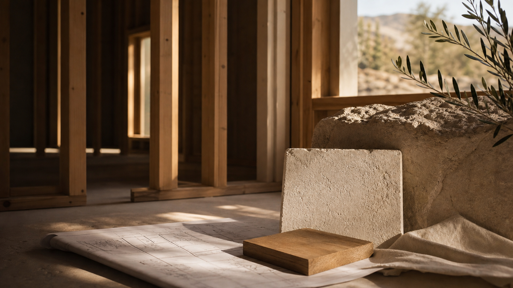
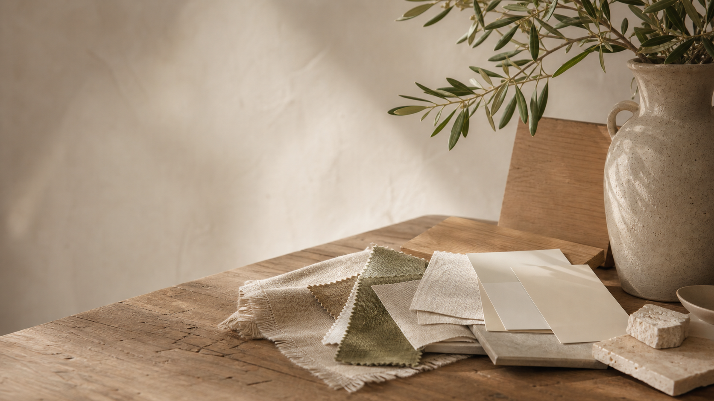
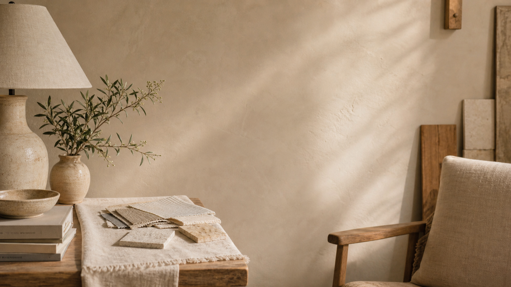
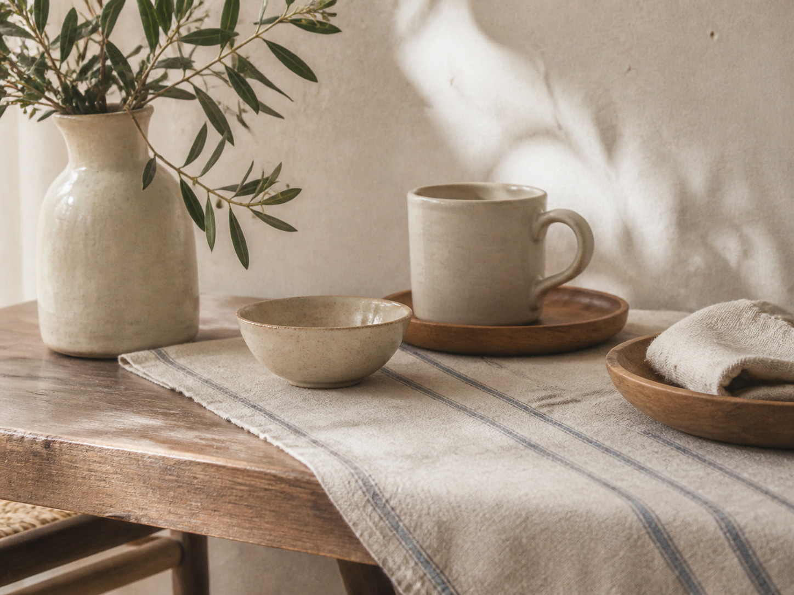
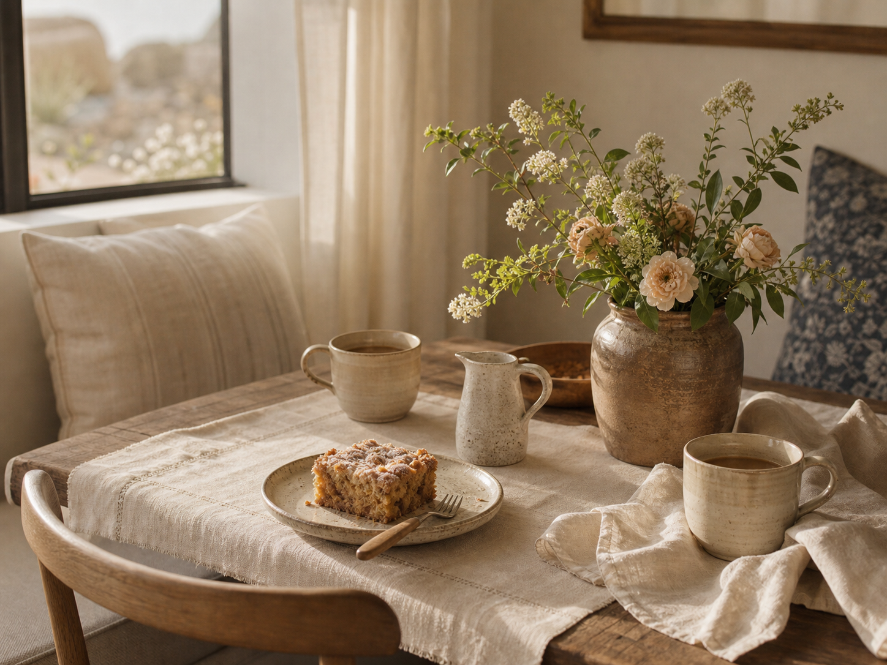
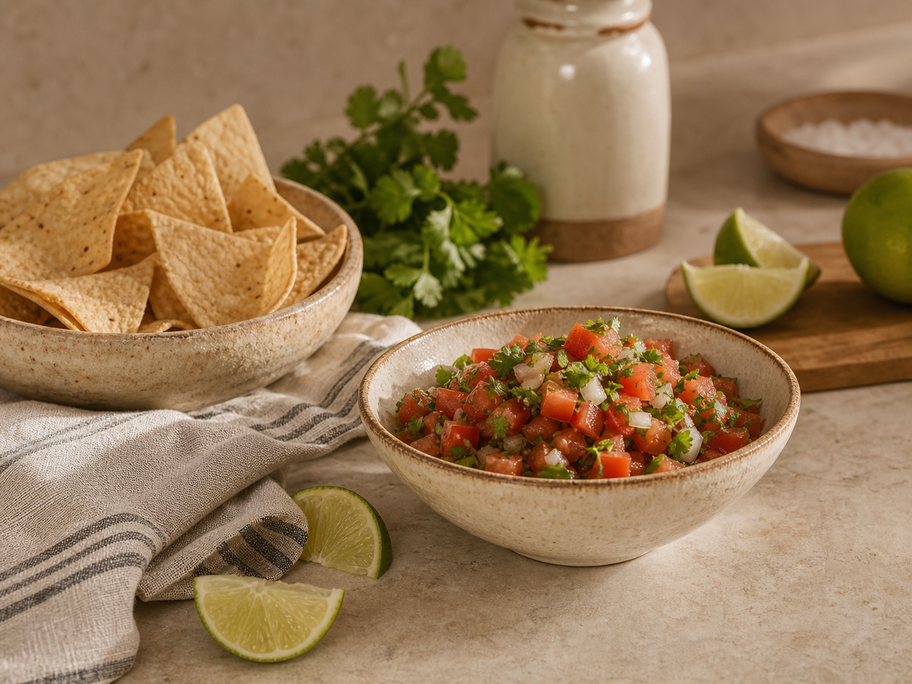

Journal
The Art of Building Beautifully
On purpose, proportion, material, and the quiet decisions that make a house feel intentional from the first sketch to the final threshold.
Read the note
On purpose, proportion, material, and the quiet decisions that make a house feel intentional from the first sketch to the final threshold.
Read the noteRead all

Build
An honest look at the numbers. Per square foot, total project, and what moves the price up or down.

Build
Land first or builder first? The honest answer and why it matters more than you think.

Design
White oak, limewash, moving stone, and spaces that feel considered without feeling decorated.

Build
How long does it actually take? A phase-by-phase breakdown and what you can do to keep things moving.

Build
The timeline, the decisions, the surprises, and how to stay sane through all of it.

Design
Heat, light, monsoons, and the design that comes naturally from building for this climate.

Build
The questions worth asking any builder before you hire them. License, fees, who is on site, and how surprises get handled.

Design
Tile, counters, flooring, paint. How Jayla thinks about selections without making the process miserable.

Build
Arizona land looks simple on paper. Here is what to actually check before you sign.

Build
What actually happens when your builder and designer work together from day one instead of in sequence.

Design
Paint, shadow, and why the right undertone should support the whole room.

Build
More square footage does not always mean a better house. Some of the best homes we have seen are also some of the smallest.

Living
It is not the square footage. It is not the finishes. Here is what we have noticed after building a lot of homes.

Design
Structure with a soft voice, especially where a room already wants order.

Living
The little inventory that makes a house feel ready for people.

Recipe
A not-too-sweet coffee cake for dusty light and second cups.

Recipe
Bright tomatoes, lime, cilantro, and the kind of heat that keeps people close to the bowl.
Build
How intention turns structure, material, and feeling into a home.
Nothing too loud. Just enough notes to make a home feel more considered.